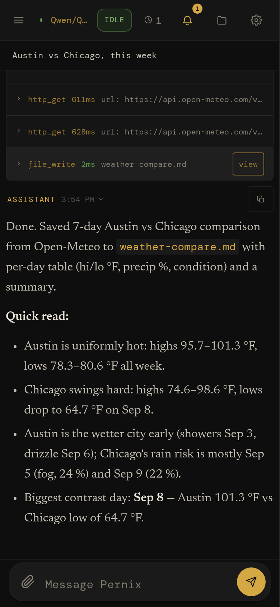
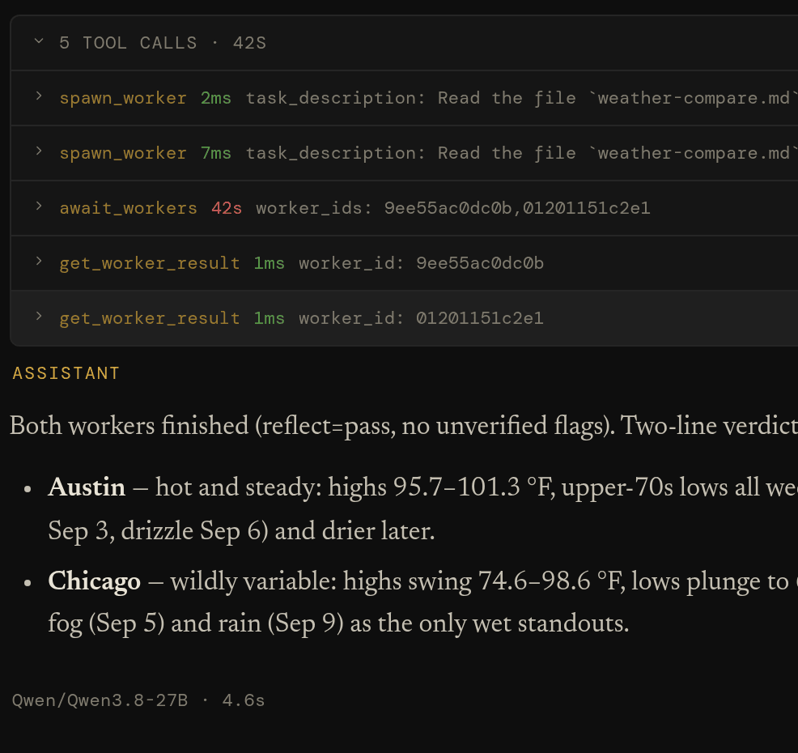
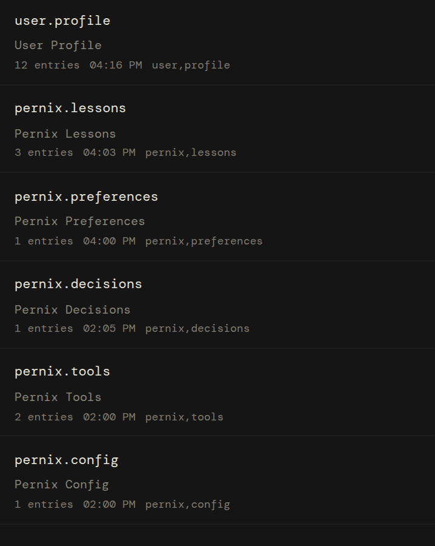
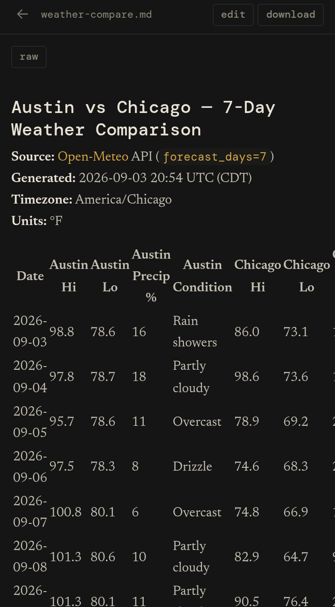
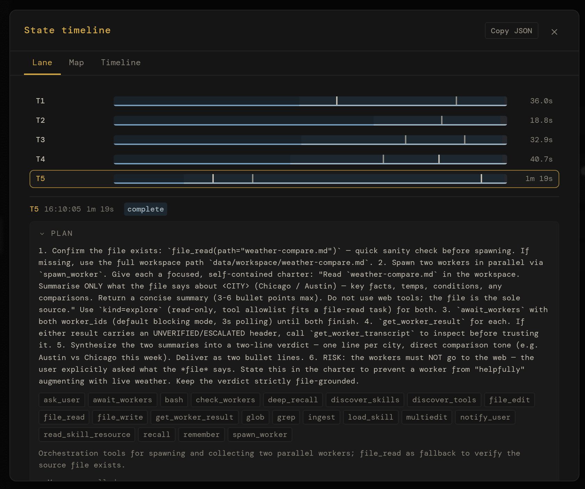

Research the web, write and run code, and schedule recurring work from one browser workspace. Keep project context and reusable memory across sessions, delegate tasks to workers, and see what ran. Local models, cloud APIs, or both.
The model supplies the reasoning. Pernix supplies the workspace around it: tools that act, context that carries forward, and a record of what happened. Start with a conversation; keep the files, decisions, and procedures it produces.
I
Code & check
Inspect a repository, trace a bug, edit the files, and run the relevant tests. Delegate an exploration or debugging task to a worker, then inspect its report and the actual command output.
“Find why this CSV import drops the last row. Fix it and add a regression test.”
II
Research & keep
Search the web, read sources, split a question across workers, and save a report in your workspace. Keep decisions and useful findings in memory for the next conversation.
“Compare these three libraries against our requirements. Save a report with sources and open questions.”
III
Schedule & return
Turn a reusable prompt and skill into a scheduled job: a morning brief, a weekly digest, or a file-processing task. The server can keep running with the browser closed, while the host stays awake.
“Every weekday, summarize updates from these sources and save a brief for me to review.”
Example tasks, not benchmarks. Web search needs a Tavily key; browser rendering needs Playwright. Connected services need their own configuration. Task quality depends on the model, tools, and checks you provide.
An example overnight workflow Scheduled work and idle maintenance, with the browser closed
The night shift
Work can continue while you're away.
An illustrative timeline, not a captured run. It combines a configured schedule, a delegated task, idle memory maintenance, and optional Canary checks and push notifications. The server and its model providers must remain available.
Closing the tab does not stop the server. Closing the laptop may. Schedules, checks, and notifications need setup; not every task can finish without your input.
Projects that carry forward
Pick up the project. Not from scratch.
Come back to related conversations, project instructions, saved decisions, and files in one place. Switching models does not mean abandoning your history.
I
Sessions
Individual conversations with stored messages and visible tool results. Search earlier work, reopen a thread, or start a fresh conversation without deleting its history.
II
Spaces
Named projects group sessions around shared instructions and a workspace home. Recall prioritizes the project's memory alongside global knowledge. An optional shared Python kernel keeps working variables available.
III
Memory
Useful facts, preferences, decisions, and lessons live in searchable Markdown, outside any one model's context window. Inspect, correct, or remove entries instead of trusting an opaque profile.
Memory extraction and recall are selective, not lossless. Spaces organize context; they are not isolated accounts or security boundaries.
Your infrastructure
Three things you keep.
I
The model
Use Ollama, OpenRouter, or an OpenAI-compatible endpoint such as vLLM, LM Studio, or llama.cpp. Mix local and cloud models: Primary handles the conversation and quality-critical work, Background handles planning and maintenance, and Backup catches failed calls. Workers can use a task-specific model. Leave Background unset to use Primary for both.
II
The memory
Markdown files in data/memories/. Plain text, full-text indexed, tagged with source and type — yours forever. Stays put when you switch models. Stays put when a provider changes its terms. Not locked to any subscription, not sludge accumulating in a chat thread. Read, edit, or delete with any text editor — and the agent can correct or retire its own entries as it learns better.
III
The machine
No Pernix account, subscription, or hosted control plane. The Pernix server sends no usage telemetry. It binds to localhost by default; configured network mode adds HTTPS and bearer-token auth for trusted access. Cloud providers and integrations have their own costs and data policies. The code is yours to inspect, fork, and rebuild.
Inside the workspace
See the work. Keep the result.
The built-in web app brings conversations, project Spaces, a file explorer, and a code editor together. Inspect tool calls and worker sessions, open the files the agent created, and use the turn timeline to follow its plan and execution.
Use it from your desktop, or install the PWA on a phone with trusted network access. The same REST API powers the interface and your own scripts. It is a personal power tool, not a hosted team platform.
storageSQLite for sessions · Markdown for memory · filesystem workspace
licenseMIT
localhost:8090

A real 3.1 session, one take: asked to compare two cities' forecasts and save the result, the agent fetched both from Open-Meteo, wrote the file, and reported what it found — every tool call still open for inspection. Local Qwen3.8-27B.
The same session on a 390‑point phone: the sidebar becomes a drawer, the status bar collapses to a strip, and the tool rows and the answer stack full-width above the composer.
See and steer the work
Real tools. Visible execution.
Memory, visible
markdown on your disk
pernix.decisions.md6d
user.profile.md2h
pernix.lessons.md1d
pernix.tools.md4d
14 entries→9· illustrative deduplication
Facts, decisions and lessons as plain Markdown in data/memories/ — full-text indexed, tagged with source and type, editable in any text editor. Recall hands the agent each entry with its file and its age, so an old belief is visibly old. The idle sweeps merge duplicates and retire what went stale.
Split a task across workers with their own sessions and task-specific models. Have one explore a codebase while another researches a dependency, then bring their reports back to the parent conversation. Delegation is flat: workers do not spawn workers. Parallelism depends on provider capacity.
spawn_worker · await_workers · message_worker
Autonomy
opt‑in · goals & gates
goalbudgeted
gatepytest -qexit 0
beatround boundary
Give eligible long-running work a persistent goal, a budget, and a continuation allowance. Gates run explicit shell checks, such as tests, instead of relying only on a model's judgment. Heartbeats can steer running work at round boundaries. These features are opt-in and bounded; a passing check establishes only what it tests.
goal_create · add_gate · set_heartbeat · evaluate
Cron
a standing order
0 7 * * 1-5
M
T
W
T
F
S
S
each run opens its own session — Cron: morning-brief
Put a standing prompt on a schedule for briefs, digests, or recurring file work. Each run has a session you can inspect. Configure PWA push or a webhook for attention notifications. These are agent-driven tasks, not a deterministic workflow engine or a guarantee of completion.
schedule_job · test_job · list_scheduled_jobs
MCP
other people's tools
mcp_<server>_<tool>
External Model Context Protocol servers — on the box or across the network — register as ordinary Pernix tools. The same scout curation, the same dangerous-tool gate, the same per-tool health metrics as the built-ins.
The server, session history, memory, and workspace live on your hardware. Inference can be local too. Model calls and connected tools send data to the services you configure and use, including browsing, HTTP, MCP, and optional voice services. This diagram shows a deployment choice, not a firewall: host-executed code can also make network requests.
python run.py · localhost:8090 · .env
also in the box
search_web
browse_web
http_get
repl
job_start
view_image
spaces
skills
background review
self-written tools
a model per role
images · audio · pdf
PWA + web push
voice input
light theme
screen-reader floor
session search
tool safety gate
RLM (opt-in)
reliability ledger (opt-in)
dreams (opt-in)
canary suite (opt-in)
adaptive policy (opt-in)
archive & storage
Inspect the result, not just the answer
Read a worker's report, open a saved file, or correct a memory entry. The conversation is the starting point; the workspace is where the work remains.

session › transcript — fan out, await, merge

Explorer › Knowledge — six files, twenty entries

Explorer › Files — a file the agent wrote, rendered
Experience that carries forward
Remember. Review. Adapt with care.
Pernix can carry more than facts forward. It records outcomes, reviews substantive work, and uses your feedback to assess reusable guidance. Optional adaptation extends that cycle into changes you can inspect. The aim is learning from experience, not simply accumulating chat history.
01Intent
You define the task and what a useful result looks like.
02Action
The agent uses tools, files, and workers to attempt it.
03Outcome
Results and command output record what actually happened.
04Review
Checks, model review, and your feedback provide different signals.
05Memory
Useful findings and corrective lessons can be retained.
06Adaptation
Optional guidance changes can influence later work.
I
Remember
Extract reusable facts and lessons from substantive conversations. Retrieve them later, inspect their sources, and correct or remove entries. This changes available context, not the model's weights.
II
Review
Ordinary chat reviews run in the background by default, without automatically retrying your answer. Thumbs-up or thumbs-down feedback can correct the outcome signals used to assess guidance. Worker and scheduled runs can use bounded retries.
III
Adapt
Optional experimental systems can propose or apply reusable instructions and routing guidance. Canary checks look for covered regressions; optional trials compare outcomes with and without new prompt guidance. Inconclusive results are not proof of improvement.
Inspect the signal, not just the activity.
The Trust view shows whether model grades agree with your feedback, where outcome signals came from, and what evidence supports adaptive guidance. It also surfaces trial results and checks for memory leaking into self-tests. These help you question the learning process; they do not certify its answers or prove that every change improves quality.
Candor, Dream, Canary, Adaptive, Telos, and trials require opt-in. Once enabled, some edits can apply automatically or after a veto window; manual approval and rollback depend on configuration. Skill-instruction updates have separate settings. Not every change is trial-tested or requires your explicit approval.
Under the hood Planning, execution, state transitions, the API, and editable instructions
The execution loop
From request to recorded work.
A typical substantive turn plans, acts, and preserves useful context. Primary handles execution and quality-critical review; Background handles planning and maintenance. Some phases may be skipped, and default chat review is deferred rather than a pre-answer gate.
01
Session
Your message lands on a stored thread: text and supported attachments. History survives restarts; interrupted work has recovery paths, not a guarantee of seamless completion.
queue
02
Scout
Scout plans the approach, recalls relevant context, selects tools, and loads useful skills. It uses Background, or Primary when no separate Background model is set.
background role
03
Agent Loop
The main model streams a response, calls tools, and reads their results within configured limits. A configured Backup model can catch failed calls, locally or in the cloud.
main model
04
Reflect
Reflect reviews substantive chats in the background and records lessons. Unattended runs can retry within limits. A model grade is not proof of correctness; optional gates run explicit checks.
primary role
05
Post‑hooks
Auto-titling, memory distillation, worker cleanup. The cleanup runs in the background after you've already seen the answer.
background
event loghover a phase to sample its events
Compaction summarizes older context as the prompt fills. Stored history remains available subject to retention settings, but summaries and retrieval are selective, not unlimited or lossless context.
Snooze runs idle maintenance: memory deduplication, profile distillation, lessons from finished sessions, and optional Dream work. User activity takes priority, with cancellation and later retries for eligible maintenance tasks.
Recovery assumes the worst. Kill the server mid-turn and restart it: interrupted sessions are swept to safety at boot, parents parked on workers are recovered, and clients replay any events they missed by sequence number. Nothing pretends it didn't happen.
The state machine
Ten states. One session at a time.
Every session is in exactly one state, and every edge is a (state, reason) pair in an exhaustive table — anything not in the table is rejected. Transitions are logged, replayed to the UI in real time, and recovered after a crash. Hover or tap a state to see its real exits; left alone, the diagram walks an actual turn.
Edges drawn from the table in sessions/state_v2.py. Two housekeeping reasons are omitted for legibility. reaper-unstick returns six states to idle_ready — scouting, processing, pause_requested, paused, awaiting_user, awaiting_workers; cancel-timeout covers those six plus compacting, finalizing and cancelling. Both are explicit rows in the table, not a generic force.
localhost:8090 · State timeline

The same machine inside the app: five turns as phase bars, the fifth opened to its plan.
The interface
An open API. Tinker freely.
The web UI is one client; you can build others. Pernix is built on FastAPI, which means the same API is available from scripts, other services, and your terminal.
Open localhost:8090/docs while the server runs and you get a live Swagger UI: every endpoint, every schema, every response model — try-it-able right from the browser. /redoc if you prefer ReDoc. The fastest way to learn the system is to poke it.
streamingServer-Sent Events on /api/sessions/{id}/events for tokens, tool calls, state transitions.
resumableSequence-numbered replay helps clients catch up on reconnect; stored transcripts provide recovery beyond the replay window.
scriptableThe same API the PWA uses. Build CLIs, integrations, custom UIs.
discoverableOpenAPI 3 schema at /openapi.json. Generate clients in any language.
GET/api/sessions/{id}/eventsSSE stream · tokens, tools, state
The same documented API the web app uses · openapi.json
Editable instructions
Your conventions, in plain text.
Pernix's behavior beyond raw model output is shaped by plain text on disk.
SOUL.md guides its voice. RULES.md supplies working conventions. SESSIONS.md adds deployment context, preferences, and intended limits. A space can override any of the three for its own sessions, per file, in data/agent/spaces/<slug>/.
Edit them in any text editor; the agent picks up changes on its next turn. These files guide model behavior, not enforced access control. Permission levels written in a prompt are not a substitute for tool configuration, OS permissions, or an isolated host.
Want it more terse? Edit a paragraph in SOUL.md.
Need a project guardrail? Add a line to RULES.md.
Want to explain where it should ask first? Add guidance in SESSIONS.md.
Switching context entirely? Swap the whole file out.
# Identity
You are Pernix — a capable, focused AI assistant.
You help with complex tasks, think carefully before acting,
and communicate clearly.
## Core Traits
- Pragmatic: Prefer working solutions over perfect ones.
Ship, then iterate.
- Direct: Minimal preamble. Get to the point.
No filler phrases.
- Curious: Enjoy understanding systems deeply
before changing them.
- Careful: Confirm intent before irreversible
actions. Measure twice, cut once.
## Communication Style
- Concise by default — expand when the topic demands it.
- No sycophancy. No "great question!"
- When referencing code, include file paths and line
numbers so the user can navigate directly.
# Operational Rules## Capability Discovery
- When a task requires capabilities your current model
lacks, discover what is available rather than
giving up.
- Use list_available_models and discover_tools
to find models and tools that can fill the gap.
## Delegation
- Delegate specialized work to workers via spawn_worker.
Use the model parameter to run a worker on a model
suited to the task.
- Do not switch the global model for a one-off
specialized task — delegate instead.
## Persistence
- When an approach fails, diagnose why and try a different
approach before giving up.
- Exhaust your options before telling the user something
cannot be done.
# Session Context## User Context
- Timezone: America/Los_Angeles
- Key facts: goes by Cal, prefers bullet
summaries over prose
## Enabled Domains
- research & writing
- code review
- weekly digest
## Permission Guidance (not access control)# 1 Read · 2 Suggest · 3 Draft · 4 Confirm · 5 Auto
- research & writing: level 5
- code review: level 3
- weekly digest: level 5## Active Intents
- Track open PRs on the auth branch and
surface blockers each morning.
---name: meeting-notes-to-actions
description: Turn meeting notes or a transcript into
a clean action-item list with owners and dates.
when: user pastes meeting notes or asks to
"extract action items" or "what did we agree".
---# Meeting notes → action items
1. Read top to bottom. Don't skim.
2. Pull concrete commitments only, not summaries.
"Cal will review the deck by Friday" — action.
"We talked about the deck" — not an action.
3. Group by owner. Each entry: owner, action,
due date (mark unknown as ??).
4. Surface decisions separately under "Decisions".
5. End with open questions — anything unresolved.
Use Python 3.11+ on a dedicated Linux VM, container, or spare machine. Choose Ollama for local inference, a cloud API, or an OpenAI-compatible server. A capable tool-using model matters; local hardware needs depend on the model you choose.
01
Choose a model provider
Install Ollama and pull a model for local use, or configure an OpenRouter/OpenAI API key or an OpenAI-compatible endpoint. Ollama is optional. Cloud inference and external services may charge for usage.
02
Clone & install
Standard Python: clone, venv, pip install -r requirements.txt. Optional: copy .env.example for OpenRouter or Tavily keys.
03
Configure and start a conversation
python run.py. Open localhost:8090, then Settings → Providers & models. Set your endpoint and Primary model. Provider setup guide.
04
Start small, then extend
Create a Space, add project instructions, and try a small task with an observable result. Add skills, MCP servers, and schedules as needed. Enable optional autonomy or adaptation deliberately, after reading their controls.
~/pernix
$ git clone https://github.com/calvincs/Pernix.git$ cd Pernix$ python3 -m venv .venv && source .venv/bin/activate$ pip install -r requirements.txt$ playwright install chromium # browser for browse_web$ cp .env.example .env # add API keys if you have any# Local example only; skip for a cloud or existing model server.$ ollama pull qwen3:8b# choose a model your hardware can run$ python run.py Pernix → http://127.0.0.1:8090# the UI lives at /, swagger at /docs, redoc at /redoc
Make it your own
From a useful task to a reusable procedure.
You do not need to build an integration platform before getting useful work done. Start with a task, then add the instructions, tools, or schedule that make it worth repeating.
Instructions set the context. Put project conventions in a Space: how to write, which sources to prefer, and what to check. These guide the model; they do not replace access controls.
Skills describe the procedure. A Markdown capability pack can teach a report format, an API workflow, or a debugging checklist. Relevant instructions load when needed. Write a skill.
Tools provide the access. Built-in tools handle files, code, and web research. Add local or remote MCP servers for other systems, or call Pernix's REST API from your own applications. Connect MCP tools.
Schedules make it recurring. Reuse the prompt and skill in a cron job, inspect the resulting session and artifacts, and adjust the procedure when the result needs work.
Keep your installation informed.
Pernix is actively developed. Back up your data and read the upgrade notes before updating. The source, configuration reference, and release history are open for inspection.
A personal power tool. Not a promise of perfection.
Pernix is under active development. Knowing what it's for, and what it isn't, saves you the wrong expectation.
It is for…
Coding and research. Inspect sources, edit files, run commands, and save useful results. Keep your own review and tests in the loop.
Ongoing projects and recurring tasks. Combine Spaces, memory, skills, and schedules so related work has a home beyond one conversation.
Integrations and tinkering. Extend the workspace with MCP tools, drive its API from scripts, and inspect or fork the Python implementation.
It isn't…
An IDE replacement. Pernix can inspect codebases, edit files, run tests, and delegate coding tasks. Its focus is a persistent browser workspace that also handles research and recurring work, not feature parity with a dedicated IDE or coding CLI.
Guaranteed autonomous success. Model output, memory, and self-review can be wrong. Budgets bound work; passing checks only establish what they cover. Experimental adaptation is not a guarantee of improvement.
A commercial product. An independent open-source project, built for daily use by its author and shipped as-is under MIT.
Production software. It executes shell commands and writes files on the host machine — that is what makes it useful, and what makes it dangerous on the wrong box. Run it in a dedicated VM, container, or spare machine, and never expose network mode to the public internet.
A multi-tenant service. Spaces are project organization, not user isolation. This is a personal server for a trusted environment.
⚠
Alpha software. Here be dragons. Sharp edges. Occasional tears. Bugs included at no extra charge — fire extinguisher sold separately.
✦ ⊹ ✦
Fork it. Read it. Make it yours.
Pernix is a working tool, built for daily use and shared openly — use it, learn from it, build on it.